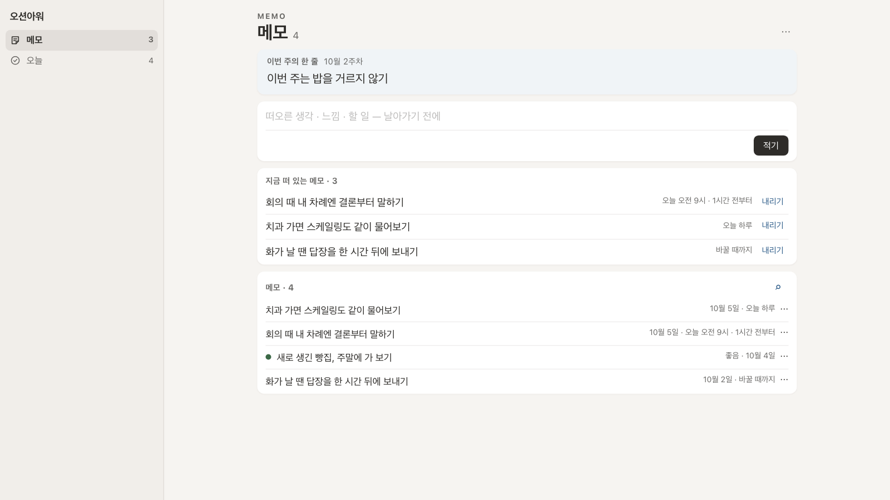
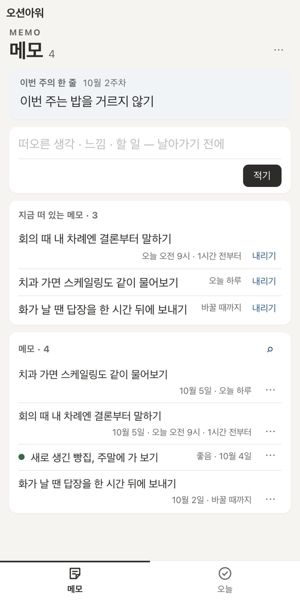
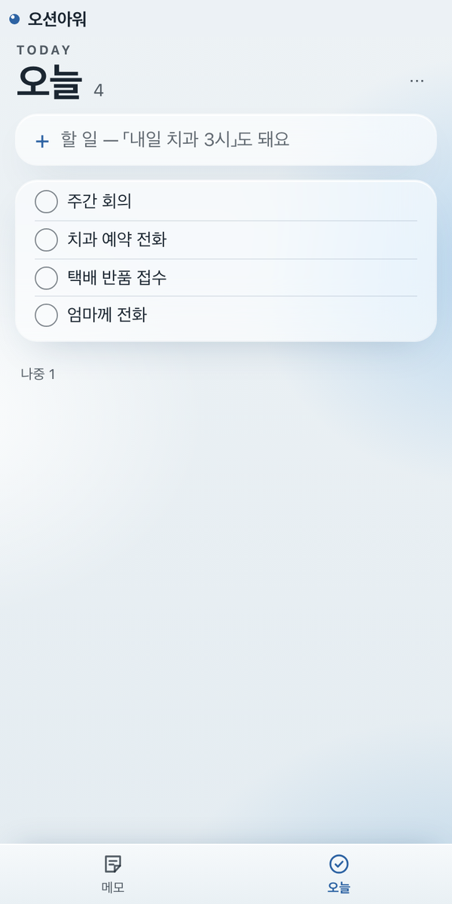

Memo
떠오른 생각 · 느낌을 그 자리에서 적고, 정한 때에 앱 첫 화면에 띄워요.
앱을 열면 바로 적는 칸이에요. 떠오른 생각 · 느낌을 날아가기 전에 적어요. 적기 시작하거나 「기분」을 누르면 기분 다섯 칸이 나오고, 한 번 누르면 돼요. 글 없이 기분만 적어도 돼요.
오늘 하루 · 일주일 · 정한 시각 · 바꿀 때까지 중에 골라요. 그때가 되면 첫 화면의 「지금 떠 있는 메모」에 뜨고, 때가 지나면 스스로 내려와요.
기분을 붙인 메모는 뜰 때 첫마디만 보여요. 떠올려 본 뒤 누르면 펼쳐져요. 메모마다 켜고 끌 수 있어요.
이번 주의 한 줄과 고른 메모를 폰 잠금 화면 · 컴퓨터 바탕화면 그림으로 저장해요. 웹은 배경을 바꾸지 못해서, 저장한 그림을 직접 걸어요. 저절로 안 바뀌어요.
고른 날부터 1 · 3 · 7 · 14 · 30 · 60일 뒤에 하루씩 떠요. 「내리기」는 그날만 내려요.
한마디 보내기 · 한마디 부탁을 링크 하나로, 가입 없이 해요. 글은 링크 안에 들어 있고 서버에는 안 남아요. 받은 사람이 「메모로 담기」를 눌러야 저장돼요.
인스타 · 블로그 글에 붙일 링크예요. 누른 사람이 그 글을 메모로 담아요.
잠금 화면에 저절로 올리기 · 위젯 · 앱을 닫은 뒤 알림은 웹으로 못 해요. 정한 시각 알림은 앱을 열어 둔 동안에만 와요.
Phone


실제 앱 화면입니다. 메모와 할 일은 예시로 넣었습니다.
Not here
사람을 붙잡아 두는 장치는 넣지 않습니다.
Your data
Price
폰 앱은 아직 없습니다. 나중에 내더라도 구독이 아니라 한 번 사는 값으로 냅니다.